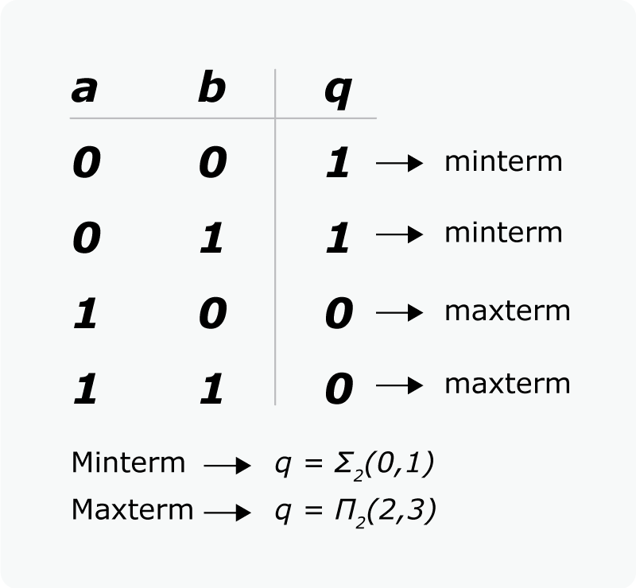

Álgebra de boole
Es una rama especial del álgebra que se usa principalmente en electrónica digital para simplificar los circuitos lógicos.
La lógica booleana solo permite dos estados del circuito representados por 1 o 0, donde 1 representa el estado verdadero y 0 representa el estado falso.
Tabla de la verdad
Son tablas que representan las posibles salidas que puede tener un circuito lógico en función de unos valores de entrada. En la siguiente imagen podemos ver una tabla de la verdad que nos muestra los posibles resultados de la función "q" para una entrada "a" y "b".

Forma canónica
Es una función booleana donde todos sus términos son sumas o productos de todas sus variables de entrada. Con la forma canónica se pueden simplificar circuitos electrónicos. Gracias a la anterior tabla de la verdad, es más sencillo obtener la siguiente forma canónica de una función.

Minterm y Maxterm
El minterm es la suma de términos de la función y producto de las variables dentro de los diferentes términos. Indica resultado de la función igual a uno (q=1) de forma directa.
El maxterm es el producto de términos de la función y suma de las variables dentro de los diferentes términos. Indica resultado de la función igual a cero (q=0) de forma directa
